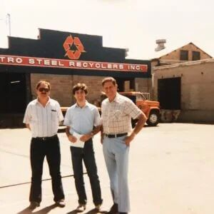

Our Roots
Metro Group Inc. is Utah's premier metal recycling, brokerage, and transloading company. The company's roots go all the way back to the early 1900s when Morris and Libby Bontsik emigrated from Eastern Europe. After arriving in Utah, the Bontsik family earned a living by collecting and selling scrap metal from their home in Price, Utah. A few years later, the operation was moved to Logan, Utah, where the company's first recycling yard was established.
In 1976, Bill Bond (3rd Generation) expanded the operation out of Logan by starting the then-named Metro Steel Distributors in Salt Lake City. Originally,  the Salt Lake location was primarily a retailer of new steel products, however, Bill and his sons, Mark and Jim, quickly realized a need for steel recycling services in Salt Lake. Shifting focus from distribution to recycling, and after a name change embodying that shift, Metro Group Inc. was born. Shortly after implementing the steel recycling service in Salt Lake City, Metro Group began recycling other non-ferrous (non-steel items such as copper, aluminum, brass, etc.) metals as well.
Later, the company recognized an opportunity to partner with the railroad industry in providing freight services to customers who didn't have rail facilities. This began the transloading part of the business. Now, Metro Transloading serves diverse industries such as mining, steel fabrication, building products and construction.
Our Growth
In 2003, Metro Group acquired two local competitors in order to increase its market share and provide more service to its customers. Metro acquired additional recycling companies in 2013 and again in 2016. The company has continued to grow and evolve into the multi-million dollar corporation that it is today. Currently, Metro Group Inc. has nine locations throughout Utah, Idaho, and Nevada and processes nearly 1.5 million pounds of metal each day.
Metro has secured its place as a leader in the scrap recycling market through unsurpassed customer service and a commitment to meeting customers' individual needs. Metro serves a vastly diverse group of clients all around the United States: from multi-billion dollar manufacturers to local individuals recycling cans. Additionally, Metro has secured national and international partnerships with metal buyers in Asia, Europe, and Latin America.
Metro Group, Inc. is currently operated by 4th and 5th generation family members along with a core team of dedicated employees. One of Metro's hallmarks is its commitment to its employees as evidenced by the uncharacteristically long average employee tenure. In 1970 Metro had 10 employees; today the company employs over 250.
Metro's Core Value:
- Constantly Improving
- Providing “WOW” Customer Service
- Having Integrity
- Being Positive and Optimistic
- Having a Strong Work Ethic
- Working Safely
Metro's Vision:
Innovative recycling and transportation solutions delivered with integrity, that have a positive global impact, promote growth and development, and improve the quality of life.
Metro Charter:
Our Metro Group family is committed to impeccable integrity. Our team is composed of invested, inspired individuals who are trusting, creative, and accountable. Our facilities are safe, clean, and efficient; with the most effective technologies. We are honest, enthusiastic, engaged employees who implement our shared vision. We value open-minded, friendly, collaborative relationships with excellent communication and long-term perspective. Finally, we also like to have fun and make some money.